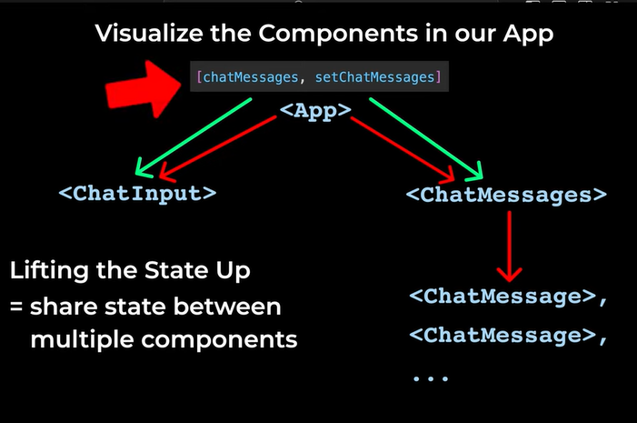

<!DOCTYPE html>
<html>
  <head>
    <title>Chatbot</title>
  </head>
  <body>
    <div class="js-container"></div>

    <script src="https://unpkg.com/supersimpledev/react.js"></script>
    <script src="https://unpkg.com/supersimpledev/react-dom.js"></script>

    <!-- To get a response from the chatbot, we'll use the Supersimpledev external library -->
    <script src="https://unpkg.com/supersimpledev/chatbot.js"></script>

    <script src="https://unpkg.com/supersimpledev/babel.js"></script>
    <script type="text/babel">
      function ChatInput({chatMessages, setChatMessages}){
        /*
          To get the text input value, we can use the onChange event handler inside the input element
          onChange will run a function whenever the input value changes (e.g. user types something)
          The function will get an event object as the first parameter
          The event object contains info about the event that just happened
          The event object has a property called `target` which is the element that triggered the event (in this example it's input element)
          The target element has a property called `value` which contains the current value of the input element
        */
        const [inputText, setInputText] = React.useState(''); // Initial data is empty, so we'll pass an empty string
        /*
          In React, we should use State to save data that changes overtime
          So, we'll save the input text by using a State
        */
        function saveInputText(event){
          // Now, everytime the input changes, onChange will run the saveInputText
          // And everytime this function runs, we'll save the data using Updater Function of the State
          // console.log(event.target.value)
          setInputText(event.target.value)
        };

        function sendMessage(){
          // console.log(inputText)
          /*
            Since the updater function is in a different component, we can use
            the technique called "Lifting the State Up" (see App image for reference)

            We will keep the State in the outer component (in this case App),
            then that outer component will share the State between multiple components under it
            (in this case, both ChatInput and ChatMessages)
          */
          const newChatMessages = [
            ...chatMessages,
            {
              message: inputText,
              sender: 'user',
              id: crypto.randomUUID()
            }
          ];
          setChatMessages(newChatMessages);
          /*
            In React, State does not update immediately, it only updates after all code finishes
            Meaning that if we update chatMessages here, then update it again to add the Chatbot response,
            the first "update" will be lost, as chatMessages is still the old value here
            To fix this, we can save the update progress on a variable, then update using that variable instead
          */

          // Below is how to add the Chatbot response
          const response = Chatbot.getResponse(
            inputText
          );

          setChatMessages([
            ...newChatMessages,
            {
              message: response,
              sender: 'robot',
              id: crypto.randomUUID()
            }
          ]);

          /*
            After sending the message, we might want to clear the input box
            So we can set the inputText state back to empty string
            
            We'll use something called Controlled Input, by utilizing a prop `value` on the input element
            This way, the input element value will always be connected to the inputText state
          */
          setInputText('');
          /*
            Although we have set the inputText state back to empty string,
            the input box won't automatically clear itself
            This is because the input box value is not connected to the inputText state yet
            We'll fix this by adding a `value` attribute to the input element,
            and set its value to inputText state
          */
        };

        return (
          <>
            <input 
              placeholder="Send a message to Chatbot" 
              size="30" 
              onChange={saveInputText}
              value={inputText}
            />
            <button
              onClick = {sendMessage}
            >Send</button>
          </>
        );
      };

      function ChatMessage({message, sender}){
        return (
          <div>
            {sender === 'robot' && (
              
            )}
            {message}
            {sender === 'user' && (
              
            )}
          </div>
        );
      };

      function ChatMessages({chatMessages}){
        /* Now, instead of manually typing/creating the Chat Messages component ourselves,
        we can use JS to generate it for us
        First, we'll store the chat messages data in an array
        We'll store each ChatMessage as an object in the array
        */ 

        /*
          When using normal array like this though, it won't automatically update the rendered data
          We'll change this to State
        */
        /*
        const chatMessages = [{
          message: 'Hello Chatbot',
          sender: 'user',
          id: 'id1'
        }, {
          message: "Hello! How can I help you?",
          sender: "robot",
          id: 'id2'
        }, {
          message: 'Can you get me todays date?',
          sender: 'user',
          id: 'id3'
        }, {
          message: "Today is December 9",
          sender: "robot",
          id: 'id4'
        }];
        */

        // React.useState will return an array
        // Inside `array`, however, will be 2 values
        // The first value is the current actual state data (e.g. chatMessages)
        // The second value is a function that lets us update the state data (e.g. setChatMessages)
        /*
        const array = React.useState(
          [{
          message: 'Hello Chatbot',
          sender: 'user',
          id: 'id1'
          }, {
            message: "Hello! How can I help you?",
            sender: "robot",
            id: 'id2'
          }, {
            message: 'Can you get me todays date?',
            sender: 'user',
            id: 'id3'
          }, {
            message: "Today is December 9",
            sender: "robot",
            id: 'id4'
          }]
        );
        */

        // To access the first value of `array`, we use array[0]
        // const chatMessages = array[0];
        // const setChatMessages = array[1]; // The convention is to start with "set", then the name of the data
        
        // Similar to object destructuring, we can also do array destructuring
        // const [chatMessages, setChatMessages] = array;

        // Then, instead of saving it to `array`, we can directly destructure it from React.useState()
        /*
        const [chatMessages, setChatMessages] = React.useState(
          [{
          message: 'Hello Chatbot',
          sender: 'user',
          id: 'id1'
          }, {
            message: "Hello! How can I help you?",
            sender: "robot",
            id: 'id2'
          }, {
            message: 'Can you get me todays date?',
            sender: 'user',
            id: 'id3'
          }, {
            message: "Today is December 9",
            sender: "robot",
            id: 'id4'
          }]
        );
        */

        /*
          In React, we shouldn't update the data directly like using .push()
          Instead, we should use the set function (Updater Function) we have on the variable
          This way, React knows that the data has changed, and it will update the HTML accordingly
          If we directly change the data, React won't know about it, and the HTML won't update
        */
        
        /* 
          We can then use .map() which lets us run through each object, and convert it into a new value
          Inside .map(), we can pass an arrow function which lets us convert each object
          The arrow function will have a chatMessage param (which will contain each object of the array)
          And then that param object can be destructured to get the attributes needed to make a new ChatMessage component
        */
        /*
        const chatMessageComponents = chatMessages.map((chatMessage) => {
          return(
            <ChatMessage 
              message={chatMessage.message}
              sender={chatMessage.sender}
            />
          );
        });
        */
        // After mapping, we now have an array/list of ChatMessage components
        // If we input the array in JSX, React will automatically render each component in the array for us
        // e.g. {chatMessageComponents}

        // In docs & tutorials, we often see the .map() function written directly inside the JSX
        // So we don't have to save it into a separate variable first

        /*
          If we look at the console, there will be a warning about "Each child in a list should have a unique "key" prop"
          Each element in the array should have a unique "key" prop
          This helps React identify which items have changed, are added, or are removed
          So we can add a "key" prop to the ChatMessage component
          Usually, real world data will have a unique ID we can use as the key
          For this example, we'll just create something that mimics it in the array
        */

        // onClick lets us run a function when the button is clicked
        // function sendMessage(){
          /*
          chatMessages.push({
            message: 'test',
            sender: 'user',
            id: crypto.randomUUID()
          });
          */

          // notice on this example, the chat window does not automatically
          //..display the new message
          // This is where State comes in
          // console.log(chatMessages)

          // State => data connected to the HTML
          // When we update this data, it will update the HTML
          // The way the Updater Function works is it will create a new array to replace the old one
          // Again, we shouldn't directly change the state data in React, so we should create a new copy first
          //..then modify that copy
          // To create a new copy, we can use the Spread Operator (...) from JS
          // ..which basically takes all the items from an array, and spreads them into a new array

          // Then, we want to add a new chat message to the end of the new array
          // So we can do that by adding a new object after the spread operator
          /*
          setChatMessages([
            ...chatMessages,
            {
              message: 'This is created using State!',
              sender: 'user',
              id: crypto.randomUUID()
            }
          ]);
          */

          /*
            The next thing we want to do is to get the actual text sent by the user for the ChatMessage
            In JS, we can use the DOM to get the input value, for example:
            const inputElement = document.querySelector('input');
            const message = inputElement.value;

            However, in React the best practice is to not use DOM manually
            As React is managing the website, so using DOM manually can lead to unexpected issues
            Instead, we should use React features to get the text from the input
          */  
        // }

        //<button onClick={sendMessage}>Send Message</button>
        

        /*
          So, to explain
          "onClick" is the event, and "sendMessage" is the event handler
          When writing an event prop, it must start with "on", then the name of the event using camelCase
          When passing the event handler, we shouldn't run the function (e.g. sendMessage())..
          ..as it will run the function, return undefined, and save that value instead to the {}
          So we pass a reference to the function using {}, and React will call it when the event occurs
        */

        return(
          <>
            {chatMessages.map((chatMessage) => {
                return(
                  <ChatMessage 
                    message={chatMessage.message}
                    sender={chatMessage.sender}
                    key={chatMessage.id}
                  />
                );
              })
            }
          </>
        );
      };

      function App(){
        const [chatMessages, setChatMessages] = React.useState(
          [{
          message: 'Hello Chatbot',
          sender: 'user',
          id: 'id1'
          }, {
            message: "Hello! How can I help you?",
            sender: "robot",
            id: 'id2'
          }, {
            message: 'Can you get me todays date?',
            sender: 'user',
            id: 'id3'
          }, {
            message: "Today is December 9",
            sender: "robot",
            id: 'id4'
          }]
        );
        // To pass the State, we just add it to the Component as props

        return (
          <>
            <div>
              
            </div>
            <ChatInput 
              chatMessages = {chatMessages}
              setChatMessages = {setChatMessages}
            />
            <ChatMessages 
              chatMessages = {chatMessages}
            />
          </>
        );
        /*
          Notice how the Component, prop, and data all have the same name (e.g. chatMessages)
          This is actually the common naming convention used in React
          So we won't end up having multiple different names for the same thing
        */
      };

      /*
        Event Handlers => lets us make the website interactive
        It lets us run a function when we interact with the website (e.g. Create a new ChatMessage when we click send)
      */

      const container = document.querySelector('.js-container');
      const root = ReactDOM.createRoot(container);
      root.render(<App />);
    </script>
  </body>
</html>